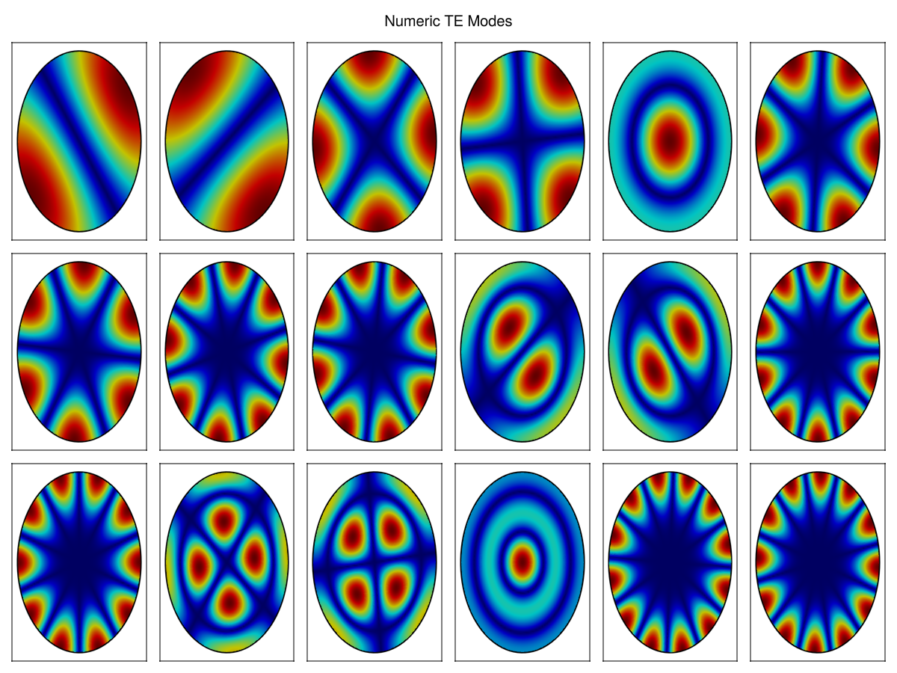

Circular Waveguide
Circular waveguides support both TE and TM modes, characterized by integer indices (m, n) where m represents the azimuthal variation and n represents the radial variation. The solutions involve Bessel functions of the first kind for the radial dependence and sinusoidal functions for the angular variation.
For modes with m > 0, two polarizations exist (cosine and sine variations), which have identical cutoff frequencies but different field orientations.
Numerical / Analytical Comparison
To validate the analytical solutions, we first compute numerical results using a finite element method on a circular mesh. The mesh is generated using Gmsh for the circular cross-section of the waveguide.
Mesh files (.msh) can be found in \src\Assets\mesh and are generated with Gmsh.jl using functions in \src\Assets\example_mesh.jl.
The following code shows the first 18 TE modes computed numerically. Note that modes with m > 0 appear in pairs (cosine/sine polarizations).
R = 1
name = "../Assets/mesh/circular_wg1.msh"
cwg_mesh(R; dl = 0.25e-1, name = name)
model = GmshDiscreteModel(name, renumber = false)
Ω_domain = Triangulation(model, tags="Domain")
gridap_coords = get_node_coordinates(Ω_domain)
makie_coords = map(x->Point2(x.data), gridap_coords)
face_to_nodes = stack(map(x->x, get_cell_node_ids(Ω_domain)))'
A_te, B_te, U_te, V_te = engeimode_gridap(model, :TE, order = 2)
nev = 20
λ_te, ϕ_te = eigs(A_te, B_te; nev=nev, which=:SM, maxiter=1200)
t = range(0, 2*pi, length=100)
circ_y_r = @. R * sin(t)
circ_x_r = @. R * cos(t)
fig = Figure(size = (1200, 900))
plot_ids = Iterators.product(1:6, 1:3) |> collect |> vec
for (idp, (ii, jj)) in enumerate(plot_ids)
uh = FEFunction(V_te, real.(ϕ_te[:, idp+1]), get_dirichlet_dof_values(V_te))
gridap_values = evaluate(uh, gridap_coords)
fz_num = abs.(gridap_values)
fz_num = fz_num / maximum(fz_num)
coord2 = makie_coords[argmin(fz_num)]
axi = Axis(fig[jj,ii])
lines!(axi, circ_x_r, circ_y_r, linewidth = 3.5, color = :black)
mesh!(axi, makie_coords, face_to_nodes, color = fz_num, colormap = :jet)
hidedecorations!(axi)
end
Label(fig[0, 3:4], "Numeric TE Modes", fontsize = 20)
fig
The numerical solution shows the magnitude of the longitudinal magnetic field component (Hz) for TE modes. Each mode exhibits a characteristic pattern determined by its indices (m, n), with m radial nodal lines.
Analytical Results
We now compute the analytical field solutions using the te_cwg_fields and tm_cwg_fields functions. For visualization clarity, we show only one polarization (cosine variation) for modes with m > 0. The analytical solutions provide exact field distributions based on Bessel function evaluations.
R = 1
freq = 10e9
name = "../Assets/mesh/circular_wg1.msh"
#cwg_mesh(R; dl = 0.25e-1, name = name)
coord, conn = mesh_data(name)
coords = coord[:, 1:maximum(conn)]
xcoords = coords[1, :]
ycoords = coords[2, :]
rcoords = map((x, y) -> hypot(x, y), xcoords, ycoords)
θcoords = map((x, y) -> atan(y, x), xcoords, ycoords)
modekind = [(1, 1, :TE), (0, 1, :TM), (2, 1, :TE), (0, 1, :TE),
(1, 1, :TM), (3, 1, :TE), (2, 1, :TM), (4, 1, :TE), (1, 2, :TE),
(0, 2, :TM), (3, 1, :TM), (5, 1, :TE), (2, 2, :TE), (0, 2, :TE),
(1, 2, :TM), (6, 1, :TE), (4, 1, :TM), (3, 2, :TE), (2, 2, :TM),
(1, 3, :TE), (7, 1, :TE), (0, 3, :TM), (5, 1, :TM), (4, 2, :TE)]
fig = Figure(size = (1200, 900))
t = range(0, 2*pi, length=100)
circ_y_r = @. R * sin(t)
circ_x_r = @. R * cos(t)
plot_ids = Iterators.product(1:6, 1:4) |> collect |> vec
for (idp, (m, n, ki)) in enumerate(modekind)
stitle = L"%$(ki)_{%$m,%$n}"
ii, jj = plot_ids[idp]
axi = Axis(fig[jj, ii], title = stitle, titlesize = 20)
hidedecorations!(axi)
if ki == :TE
fields = te_cwg_fields(rcoords, θcoords, R, m, n, freq, 1.0, 1.0)
fz = map(x->abs(x[6]), fields)
else
fields = tm_cwg_fields(rcoords, θcoords, R, m, n, freq, 1.0, 1.0)
fz = map(x->abs(x[3]), fields)
end
lines!(axi, circ_x_r, circ_y_r, linewidth = 3.5, color = :black)
mesh!(axi, coords, conn, color = fz, colormap = :jet)
end
fig
This visualization displays 24 modes ordered by increasing cutoff frequency, alternating between TE and TM types. The color map shows the magnitude of Hz (for TE modes) or Ez (for TM modes).
Transverse Fields
The field functions return electromagnetic field components in cylindrical coordinates (Er, Eθ, Ez, Hr, Hθ, Hz). For visualization and practical applications, we often need the transverse components in Cartesian coordinates. The conversion is performed using the metric and unit vector transformations provided by the metric_and_unit_cylindrical function.
The following code computes and visualizes the transverse electric field for TE modes and the transverse magnetic field for TM modes, displayed as vector arrow plots:
name = "../Assets/mesh/circular_wg2.msh"
#cwg_mesh(R; dl = 0.7e-1, name = name)
coord, conn = mesh_data(name)
coords = coord[:, 1:maximum(conn)]
xcoords = coords[1, :]
ycoords = coords[2, :]
rcoords = map((x, y) -> hypot(x, y), xcoords, ycoords)
θcoords = map((x, y) -> atan(y, x), xcoords, ycoords)
fig = Figure(size = (1200, 900))
for (idp, (m, n, ki)) in enumerate(modekind)
stitle = L"%$(ki)_{%$m,%$n}"
ii, jj = plot_ids[idp]
axi = Axis(fig[jj, ii], title = stitle, titlesize = 20)
hidedecorations!(axi)
if ki == :TE
fields = te_cwg_fields(rcoords, θcoords, R, m, n, freq, 1.0, 1.0)
fzi = map(x->(x[1], x[2]), fields)
else
fields = tm_cwg_fields(rcoords, θcoords, R, m, n, freq, 1.0, 1.0)
fzi = map(x->(x[4], x[5]), fields)
end
fxy = map(fzi, rcoords, θcoords) do frθ, r, θ
h_r, h_ϕ, e_r_x, e_r_y, e_ϕ_x, e_ϕ_y = metric_and_unit_cylindrical(r, θ)
Fx = frθ[1] * e_r_x + frθ[2] * e_ϕ_x
Fy = frθ[1] * e_r_y + frθ[2] * e_ϕ_y
return (Fx, Fy)
end
t = lines!(axi, circ_x_r, circ_y_r, linewidth = 3.5, color = :black)
translate!(t, (0, 0, 2))
fu = real.(getindex.(fxy, 1))
fv = real.(getindex.(fxy, 2))
ft = map(x->hypot(x...), fxy) * 25
vm = maximum(ft)*10
fu = fu ./ ft
fv = fv ./ ft
arrows2d!(axi, xcoords, ycoords, fu, fv, color = ft, colormap = :jet)
end
fig